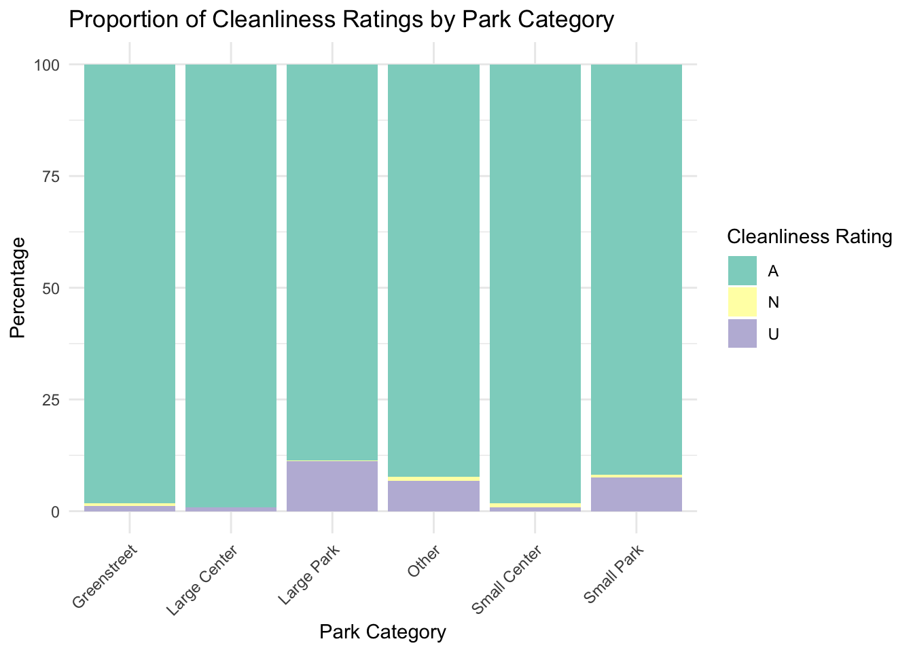
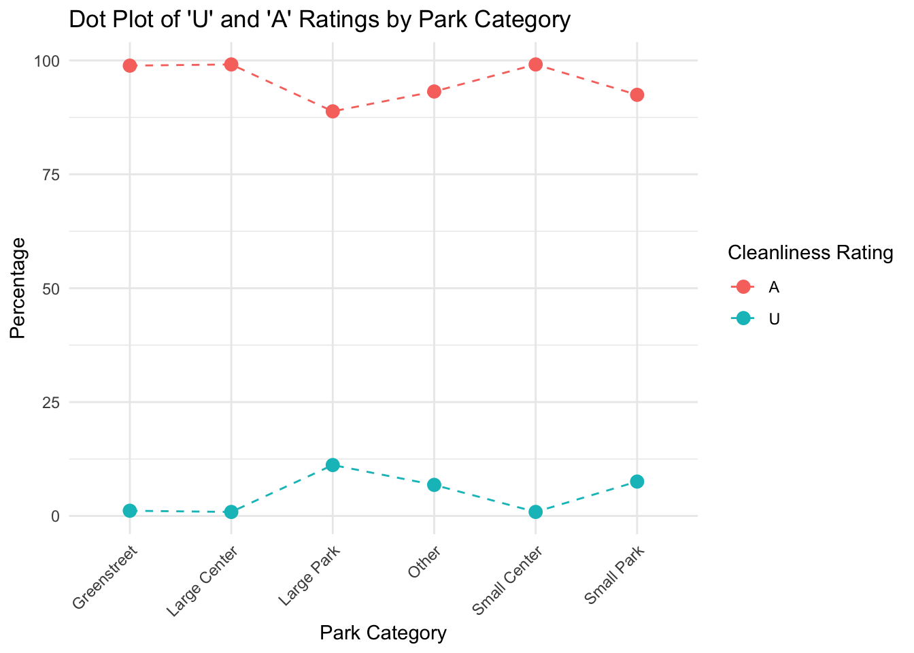

Overall Cleanliness of NYC Parks

Motivation
This project was inspired by the goal of exploring cleanliness in NYC parks, aiming to understand the current state of park cleanliness and the factors affecting it through detailed data analysis. We focused on identifying specific features that contribute to lower cleanliness scores, as well as examining the temporal and spatial variations in these scores. By pinpointing these influential features and patterns, we aim to uncover the key reasons behind declining cleanliness levels. This analysis not only provides insights into the cleanliness conditions of NYC parks but also lays a foundation for policymakers to implement effective measures to enhance park environments and improve public experience.
Initial questions
- Analysis of Cleanliness Ratings by Different Features:
- How often are different features rated as “Unacceptable” (U) or “Very Unacceptable” (U/S)?
- What are the top three features that are most likely to be “Acceptable” in each borough?
- Which boroughs are the cleanest and least clean over the past decade?
- Analysis of Cleanliness Ratings over Different Time Periods:
- What is the acceptable proportion of cleanliness by boroughs and citywide over the years?
- What is the acceptable proportion of cleanliness by boroughs and citywide across different seasons?
- Analysis of the Relationship Between Cleanliness and Park Categories:
- How does cleanliness differ among different park categories?
Data
Data Source
The data contains related datasets about the Parks Inspection Program (PIP), a comprehensive, outcome-based performance measurement system that generates detailed inspections of parks and buildings. Inspectors perform approximately 6,000 PIP inspections each year, giving each inspected property an “Acceptable” (A) or “Unacceptable” (U) rating for overall condition and cleanliness. Individual “A” or “U” ratings are given to as many as 17 separate park features which fall under three broad categories: cleanliness, structural, and landscape.
Datasets on properties and cleanliness are maintained in this project, including the following:
- Parks
Inspection Program – All Sites (MAPPED): Contains properties
eligible for inspection under the Parks Inspection Program, with
internal directives and comments. Provides basic park information,
including unique identification numbers, park names, zip codes,
etc.
- Parks
Inspection Program – Feature Ratings: Contains ratings for inspected
property features, with each row representing a rating for a specific
feature. Provides the cleanliness feature IDs, corresponding ratings,
etc., for each park.
- Parks Inspection Program – Inspections: Contains overall ratings related to property inspections, with each row representing an individual inspection. Provides details such as inspection times, park cleanliness ratings, etc.
Data Processing
Data Cleaning: Initially, multiple datasets were loaded and cleaned, ensuring consistent column names.
Feature Filtering: Selected relevant cleanliness features, including Litter, Glass, Graffiti, Weeds, and Ice, for focused analysis.
Data Merging: Merged datasets based on
prop_idandinspection_idto build a complete dataset covering park information, feature ratings, and cleanliness inspection data.Data Organization: Further cleaned and standardized the combined dataset, addressing missing values, removing unnecessary columns, and formatting string values to maintain data consistency.
library(tidyverse)
library(plotly)
library(ggsci)
library(kableExtra)parks_properties <- read_csv("./data/nycparks_cleanliness/parks_properties.csv") |>
janitor::clean_names() |>
select(gis_id = gispropnum, borough, class, name311, signname)
pip_all <- read_csv("./data/nycparks_cleanliness/pip_all_sites.csv") |>
janitor::clean_names() |>
select(prop_num, prop_name, prop_id, site_name, boro, zip_code, category)
pip_inspect <- read_csv("./data/nycparks_cleanliness/pip_inspections.csv") |>
janitor::clean_names() |>
select(prop_id, inspection_id, season, round, date, inspection_year, cleanliness, overall_condition)
pip_feature <- read_csv("./data/nycparks_cleanliness/pip_feature_ratings.csv") |>
janitor::clean_names()
pip_cleanliness <- pip_feature |>
filter(feature %in% c("Litter", "Glass", "Graffiti", "Weeds", "Ice"))
pip_1 <- pip_cleanliness |>
full_join(pip_inspect, by = "inspection_id")
pip <- pip_all |>
full_join(pip_1, by = "prop_id") |>
filter(!is.na(cleanliness)) |>
filter(!is.na(boro)) |>
select(-ia) |>
filter(inspection_year %in% 2015:2024) |>
mutate(rating = toupper(trimws(rating)), boro = toupper(trimws(boro)))Final Dataset
The variables in the final dataset are:
prop_num: Unique identification number for each park property.
prop_name: Name of park property.
prop_id: Unique identification number for a property or portion of a property. In some cases – a standalone, smaller park for example – this number will be equivalent to the PropNum. In other cases – a zone, playground or other site within a larger park – an additional designation of letters and/or numbers will be added.
site_name: Name of park property or portion of a property.
boro: Borough in which property is located (B = Brooklyn; M = Manhattan; Q = Queens; R = Richmond (Staten Island); X = Bronx).
zip_code: Zip Code in which the property is located.
category: Property rating category for Parks Inspection Program.
feature: Property feature assigned a rating.
rating: Feature rating (A= acceptable; U= unacceptable; N= not rated; U/S= very unacceptable).
inspection_id: Inspection ID associated with feature.
feature_number: Unique feature identification number.
season: Inspection season of inspection.
date: Date of inspection.
inspection_year: Inspection year of inspection.
cleanliness: Cleanliness rating (A= acceptable; U= unacceptable; N= not rated).
Exploratory Analysis
1. Cleanliness rating analysis of different features
Objective: To understand the differences in cleanliness between different features (Litter, Glass, Graffiti, Weeds, Ice).
“U and U/S times” vs. “feature Category”.
Count the number of times each feature is rated “unacceptable” (U) or “very unacceptable” (U/S) in each park. Find out what kind of features are most unacceptable and analyze the distribution characteristics of these features.
feature_summary <- pip |>
group_by(feature) |>
summarise(
total_count = n(),
num_U = sum(rating == "U", na.rm = TRUE),
num_US = sum(rating == "U/S", na.rm = TRUE),
.groups = "drop"
) |>
mutate(
proportion_U = num_U / total_count,
proportion_US = num_US / total_count,
proportion_U_US = (num_U + num_US) / total_count
)
kable(head(feature_summary)) |>
kable_styling(full_width = FALSE) | feature | total_count | num_U | num_US | proportion_U | proportion_US | proportion_U_US |
|---|---|---|---|---|---|---|
| Glass | 59656 | 568 | 40 | 0.0095213 | 0.0006705 | 0.0101918 |
| Graffiti | 60229 | 2777 | 411 | 0.0461074 | 0.0068240 | 0.0529313 |
| Ice | 18972 | 61 | 54 | 0.0032153 | 0.0028463 | 0.0060616 |
| Litter | 60229 | 7840 | 2063 | 0.1301699 | 0.0342526 | 0.1644225 |
| Weeds | 40691 | 3010 | 419 | 0.0739721 | 0.0102971 | 0.0842692 |
feature_summary_long <- feature_summary |>
pivot_longer(cols = c(proportion_U, proportion_US, proportion_U_US), names_to = "rating_type", values_to = "proportion") |>
mutate(rating_type = case_when(
rating_type == "proportion_U" ~ "unacceptable (U)",
rating_type == "proportion_US" ~ "very unacceptable (U/S)",
rating_type == "proportion_U_US" ~ "U + U/S"
))p1 <- ggplot(feature_summary_long, aes(x = feature, y = proportion, fill = rating_type)) +
geom_bar(stat = "identity", position = "dodge") +
labs(
title = "Proportions of U, U/S, and U + U/S for Different Features",
x = "Feature",
y = "Proportion",
fill = "Rating Type"
) +
theme_minimal() +
theme(axis.text.x = element_text(angle = 45, hjust = 1)) +
scale_fill_brewer()
ggplotly(p1)From the bar chart, we can observe the proportions of three rating types — Unacceptable (U), Very Unacceptable (U/S), and their combined proportion (U + U/S) — for different features (Glass, Graffiti, Ice, Litter, and Weeds).
Feature Analysis:
Litter: The feature “Litter” has the highest combined (U + U/S) and individual “U” proportions compared to all other features. This indicates that litter is the most problematic feature in terms of cleanliness, frequently being rated as unacceptable.
Weeds: Weeds have relatively high values for both “U” and “U + U/S” proportions. This suggests that weeds are also a significant cleanliness issue.
Graffiti: Graffiti shows a moderate level of unacceptable ratings (both “U” and “U + U/S”), indicating that it is frequently, but not as consistently as Litter, rated as problematic.
GlassandIce: Both features have relatively low proportions across all rating types, suggesting that these features are generally well-maintained and less frequently rated as unacceptable.
Rating Types:
- For all features, the proportion of “U/S” is relatively low compared to the “U” rating, suggesting that while some features may have been rated very unacceptable, the majority of issues fall into the unacceptable category without additional safety concerns.
Find the least error-prone feature in different boroughs
To find out the feature that is the least unacceptable by calculating the A proportion of each feature score in different regions.
feature_summary_boro <- pip |>
filter(!is.na(rating)) |>
group_by(boro, feature) |>
summarise(
total_count = n(),
num_A = sum(rating == "A"),
.groups = "drop"
) |>
mutate(
proportion_A = num_A / total_count
)
best_feature_per_boro <- feature_summary_boro |>
group_by(boro) |>
filter(proportion_A == max(proportion_A)) |>
slice(1) |>
ungroup() |>
arrange(boro)
kable(head(best_feature_per_boro)) |>
kable_styling(full_width = FALSE) | boro | feature | total_count | num_A | proportion_A |
|---|---|---|---|---|
| B | Ice | 4755 | 4688 | 0.9859096 |
| M | Ice | 3925 | 3843 | 0.9791083 |
| Q | Ice | 4855 | 4799 | 0.9884655 |
| R | Glass | 5566 | 5503 | 0.9886813 |
| X | Ice | 3691 | 3645 | 0.9875373 |
The table shows the feature in each borough with the highest proportion of “A” cleanliness ratings, indicating which features are the least error-prone in terms of cleanliness for each borough. The data includes results for five boroughs: Brooklyn (B), Manhattan (M), Queens (Q), Staten Island (R), and Bronx (X).
Ice is the best-maintained feature in Brooklyn, Manhattan, Queens, and Bronx, with “A” rating proportions ranging from 97.91% to 98.85%. This indicates consistent cleanliness management across these boroughs. In Staten Island, Glass has the highest “A” rating at 98.87%, suggesting a different focus in cleanliness efforts. Overall, Ice appears to be easier to maintain across multiple boroughs, while Glass is notably well-managed in Staten Island.
Find the top three cleanest and least clean park areas in each district over the decade
To find out the top three parks with the largest number of “A” rating and the top three parks with the largest number of “U+U/S” rating over the past ten years
park_cleanliness_summary <- pip |>
filter(rating %in% c("A", "U", "U/S")) |>
group_by(boro, site_name, zip_code, rating) |>
summarise(count = n(), .groups = "drop") |>
pivot_wider(names_from = rating, values_from = count, values_fill = 0) |>
mutate(
total_A = A,
total_U_US = U + `U/S`
)top_3_clean_parks <- park_cleanliness_summary |>
group_by(boro) |>
arrange(boro, desc(total_A)) |>
slice_max(order_by = total_A, n = 3) |>
select(boro, site_name, zip_code, total_A) |>
arrange(boro)
kable(head(top_3_clean_parks)) |>
kable_styling(full_width = FALSE) | boro | site_name | zip_code | total_A |
|---|---|---|---|
| B | GREENSTREET | 11236 | 1003 |
| B | GREENSTREET | 11222 | 832 |
| B | GREENSTREET | 11201 | 749 |
| M | GREENSTREET | 10038 | 485 |
| M | Central Park West | 00083 | 344 |
| M | GREENSTREET | 10039 | 341 |
Top 3 Clean Parks in Each Borough:
- The cleanest parks across most boroughs are Greenstreets,
particularly in Brooklyn (B), Queens (Q), Staten Island (R), and the
Bronx (X). Manhattan (M) includes both Central Park West and
Greenstreets.
- The high ratings of Greenstreets indicate a relatively strong level of maintenance, with this category distributed across various postal codes, demonstrating good cleanliness consistency.
top_3_unclean_parks <- park_cleanliness_summary |>
group_by(boro) |>
arrange(boro, desc(total_U_US)) |>
slice_max(order_by = total_U_US, n = 3) |>
select(boro, site_name, zip_code, total_U_US) |>
arrange(boro)
kable(head(top_3_unclean_parks)) |>
kable_styling(full_width = FALSE)| boro | site_name | zip_code | total_U_US |
|---|---|---|---|
| B | Dr John’s Plgd | 11234 | 43 |
| B | GREENSTREET | 11207 | 43 |
| B | GREENSTREET | 11233 | 41 |
| M | Marcus Garvey Park Zone 3 | 10027 | 50 |
| M | Highbridge Park Zone 1 | 10032 | 45 |
| M | Highbridge Park Zone 7 | 10033 | 44 |
Top 3 Unclean Parks in Each Borough:
- In Brooklyn (B) and Manhattan (M), Greenstreets appear not only as
one of the cleanest but also among the uncleanest in certain areas,
showing inconsistencies in their maintenance.
- Staten Island (R) and the Bronx (X) have parks like Silver Lake Park
Zone 1 and Williamsbridge Oval ranked among the uncleanest, indicating
that maintenance in these areas needs improvement.
- In Manhattan, the Highbridge Park series and Brooklyn’s Dr John’s Playground show high numbers of U+U/S ratings, suggesting that these parks may require more resources to improve their cleanliness.
These results suggest significant differences in the cleanliness maintenance of Greenstreets across different regions, while specific parks like Highbridge Park and Dr John’s Playground need more attention and improvement.
2. Analysis of the cleanliness score in different time periods
Objective: Explore the impact of different time periods on park cleanliness, including seasons and years.
“Acceptable Ratio of Borough and City cleanliness” VS “Year”
To calculate and compare the overall “A” rating proportion of cleanliness in each borough and the whole New York City each year, and to analyze the cleanliness trend in different boroughs.
annual_cleanliness_summary <- pip |>
filter(!is.na(cleanliness)) |>
group_by(boro, inspection_year) |>
summarise(
total_count = n(),
num_A = sum(cleanliness == "A"),
proportion_A = num_A / total_count,
.groups = "drop"
) |>
mutate(boro = ifelse(is.na(boro), "NYC", boro))
citywide_summary <- pip |>
filter(!is.na(cleanliness)) |>
group_by(inspection_year) |>
summarise(
total_count = n(),
num_A = sum(cleanliness == "A"),
proportion_A = num_A / total_count,
boro = "NYC",
.groups = "drop"
)
combined_cleanliness_summary <- bind_rows(annual_cleanliness_summary, citywide_summary)
combined_cleanliness_summary$boro <- factor(combined_cleanliness_summary$boro,
levels = c("NYC",
sort(unique(combined_cleanliness_summary$boro[combined_cleanliness_summary$boro != "NYC"]))))p2 <- combined_cleanliness_summary |>
ggplot(aes(x = inspection_year, y = proportion_A, color = boro, group = boro)) +
geom_point(size = 2) +
geom_line(aes(linetype = boro, size = boro)) +
scale_color_npg() +
scale_linetype_manual(values = c(
"NYC" = "solid", "B" = "dashed", "M" = "dotted", "Q" = "twodash", "R" = "dotdash", "X" = "longdash")) +
scale_size_manual(values = c("NYC" = 1.5,
"B" = 1, "M" = 1, "Q" = 1, "R" = 1, "X" = 1)) +
labs(
title = "Acceptable Proportion by Year for NYC and Its Boroughs",
x = "Year",
y = "Acceptable Proportion",
color = "Borough"
) +
theme_minimal() +
theme(
axis.text.x = element_text(angle = 45, hjust = 1),
legend.position = "top"
)
ggplotly(p2)Analysis:
- Overall Trend: The overall Acceptable proportion
for New York City (grey line) shows a steady increase from around 90% in
2015 to 93% by 2018, followed by a significant decline around 2020, with
a slight recovery in 2022.
- Inter-Borough:
Staten IslandandQueensshow significantly higher cleanliness levels compared to other boroughs, whereas theBronxandBrooklyndisplay noticeably lower cleanliness in certain years.
- The
Bronxexhibits large fluctuations in cleanliness, with a sharp decline in 2022 to below 87%, marking it as the borough with the lowest cleanliness proportion.Manhattanshows a steady increase from 92% in 2015, peaking in 2018, with slight fluctuations but maintaining relatively high cleanliness levels.Brooklynsees an improvement after 2017, a notable dip around 2020, and a recovery to above 90% by 2022.
Staten Islandconsistently maintains an Acceptable proportion above 96%, making it the most stable and cleanest borough throughout the period.Queensstarts with a high cleanliness proportion in 2015, rising significantly after 2018 to nearly 97%, and remains one of the leading boroughs despite a slight decline.
- The decline around 2020 could be attributed to pandemic-related resource shortages and increased maintenance challenges.
“Acceptable Ratio of cleanliness across Boroughs” VS “Season”
To analyze the differences in cleanliness scores in spring, summer, fall, and winter over a 10-year period.
park_cleanliness_summary <- pip |>
group_by(boro, season, inspection_year) |>
summarise(
total_count = n(),
num_A = sum(cleanliness == "A"),
proportion_A = num_A / total_count,
.groups = "drop"
)ggplot(park_cleanliness_summary, aes(
x = inspection_year,
y = proportion_A,
color = boro,
group = boro
)) +
geom_point(size = 1.5) +
geom_line(aes(linetype = boro, size = boro)) +
scale_color_npg() +
scale_size_manual(
values = c(
"B" = 0.8, "M" = 0.8, "Q" = 0.8, "R" = 0.8, "X" = 0.8)) +
scale_linetype_manual(
values = c(
"B" = "dashed", "M" = "dotted", "Q" = "dotdash", "R" = "twodash", "X" = "longdash")) +
labs(
title = "Acceptable Proportion by Year for Different NYC Boroughs and Seasons",
x = "Year",
y = "Acceptable Proportion",
color = "Borough"
) +
theme_minimal() +
theme(
axis.text.x = element_text(angle = 45, hjust = 1),
legend.position = "top") +
facet_wrap(~ season, nrow = 1)
Analysis:
- Overall Trends: The cleanliness proportions across
all boroughs remain relatively stable above 0.9, though seasonal
variations are apparent.
Bronxshows relatively lower cleanliness, particularly in summer, where it drops below 0.9.
Manhattanmaintains stable cleanliness with minimal fluctuations, especially performing well in winter.
Queensgenerally maintains a higher cleanliness level across all seasons, around 0.95.
Brooklynshows significant improvement in cleanliness during winter, while summer exhibits slightly lower levels.
Staten Islandconsistently maintains the highest cleanliness levels with minimal seasonal variation.
- There is missing data point for Staten Island and Manhattan in Fall 2022, possibly due to disruptions in data collection during the pandemic.
3. Association analysis of cleanliness and park category
Objective: To study the association between park types and cleanliness and to assess which park types are more likely to accumulate litter.
Cleanliness differences between different Park categories To analyze cleanliness scores for different categories of parks (Greenstreet, Large Center, Large Park, Other, Playground, Property, Schoolyard, Small Center, Small Park) and assess which types of parks are most likely to be kept clean and which are most likely to have problems.
First, we draw a stacked bar chart to show the cleanliness rating distribution of different types of parks.
clean_data <- pip |>
filter(!is.na(category) & !is.na(rating))
clean_data |>
filter(!is.na(category) & !is.na(cleanliness)) |>
count(category, cleanliness) |>
group_by(category) |>
mutate(percentage = n / sum(n) * 100) |>
ggplot(aes(x = category, y = percentage, fill = cleanliness)) +
geom_bar(stat = "identity", position = "stack") +
labs(
title = "Proportion of Cleanliness Ratings by Park Category",
x = "Park Category",
y = "Percentage",
fill = "Cleanliness Rating"
) +
theme_minimal() +
theme(axis.text.x = element_text(angle = 45, hjust = 1)) +
scale_fill_brewer(palette = "Set3")
It can be found that the proportion of “N” ratings is small but slightly higher in categories like Large Park and Other, suggesting some missing or incomplete cleanliness data in these types of parks.
Then we focuses exclusively on “A” and “U” ratings, removing the influence of “N” ratings, thus offering a clearer comparison with a point plot.
clean_data |>
filter(cleanliness %in% c("A", "U")) |>
group_by(category, cleanliness) |>
summarise(count = n(), .groups = "drop") |>
group_by(category) |>
mutate(percentage = count / sum(count) * 100) |>
ggplot(aes(x = category, y = percentage, color = cleanliness)) +
geom_point(size = 3) +
geom_line(aes(group = cleanliness), linetype = "dashed") +
labs(
title = "Dot Plot of 'U' and 'A' Ratings by Park Category",
x = "Park Category",
y = "Percentage",
color = "Cleanliness Rating"
) +
theme_minimal() +
theme(axis.text.x = element_text(angle = 45, hjust = 1))Analysis:
- The proportion of “A” ratings is consistently high across all park
categories, almost reaching 100%. This indicates that most parks
received an acceptable cleanliness rating.
- The proportion of “U” ratings is relatively low, with noticeable
increases in the
Large ParkandSmall Parkcategories. Specifically,Large Parkshows a higher percentage of “U” ratings.
- Other categories, such as
Greenstreet,Large Center, andSmall Center, show almost no “U” ratings, with proportions close to 0%.
Discussion
Our findings indicate that certain features, seasons, and boroughs are associated with lower cleanliness scores. Notably, “Graffiti” and “Litter” were consistently found as problematic features. The overall cleanliness also fluctuated across different seasons, with winter generally showing higher acceptable ratings. Spatially, the boroughs showed notable differences, with some boroughs consistently lagging in cleanliness ratings. These findings align with our expectations and suggest that feature-specific interventions and seasonal adjustments are critical for enhancing park cleanliness.